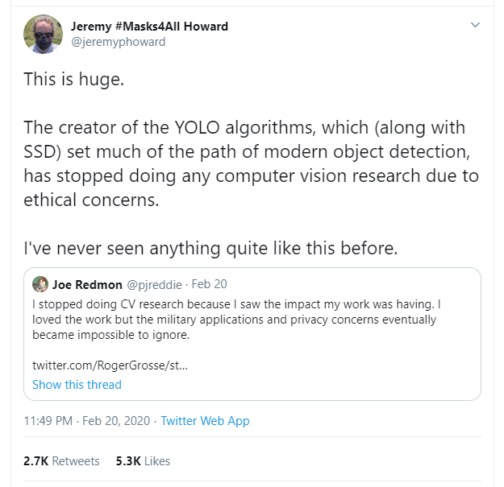
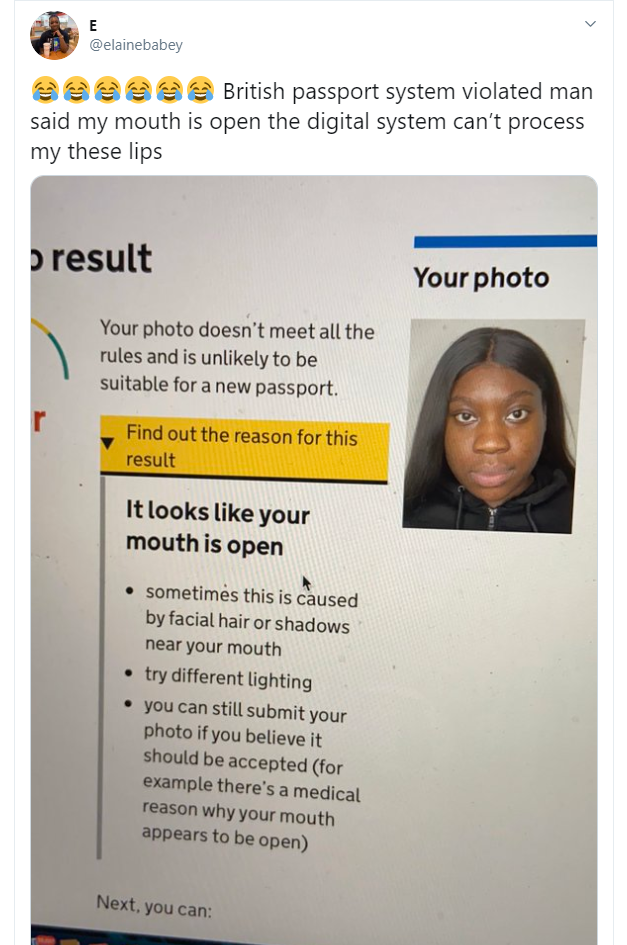

Author: Khutso Nkadimeng
20 May 2020
YOLO (You Only Look Once) creator Joseph Redmon, stopped doing Computer Vision research citing ethical concerns. His concerns are shared by many, privacy and military applications. His actions came in a discussion about the Conference and Workshop on Neural Information Processing Systems’ decision to ask researchers to include possible societal consequences of their work. The resulting Twitter discussion is very relevant to the question of the developer’s responsibility emphasised in this course.

Just like Joe, I used to believe that science was objective and independent of politics, but unlike him, my wake-up call came early as I had to confront pseudo-sciences like Social Darwinism. However, knowing how science could be bent to support a political agenda did very little to make me think software could serve that purpose too and more importantly, that I, as a programmer, make political choices with every line of code I write. Something as simple as an image size on my website has access implications, those with a poor internet connection cannot see it. But I could never imagine a software displaying such historic bias displayed by facial recognition systems.
This study found a 34.7% error rate in classifying dark-skinned females and 0.8% error rate in classifying light-skinned males. The facial recognition systems in question follow the historical pattern of discrimination with white males at the top, followed by white females, black males and then black females at the bottom. This reflects a larger and perpetual societal problem that needs to be rectified urgently. When reading these papers and articles all I saw were opportunities because I have faith in science and technology, I know solutions will be found, however, this one offended me. British passport website rejected an application from a black woman because the software mistook her lips for an open mouth. Some of the advice given to rectify this include "try different lighting" and "you can still submit your photo if you believe it should be accepted (for example there’s a medical reason why your mouth appears to be open)”. Nowhere do they acknowledge that it could be because their system does not work as well for darker skin tones. This brings us to the question of responsibility, who should be held accountable for this?
ACLU tested Amazon’s facial recognition software, Rekognition, it incorrectly matched 28 members of the US Congress with people who previously committed crimes. 39% of the false matches were people of colour. I believe Amazon’s engineers were aware of this problem and the management too, yet they were marketing this tool to law enforcement. Regulation can slow innovation and entrepreneurship; it should be structured as an incentive as opposed to an obstacle. I think there should be clear legislation allowing people to sue corporations and government departments if they are misidentified by these types of systems and it was not disclosed that the software has a built-in bias. Tobacco products make it clear to consumers that tobacco causes cancer and facial recognition applications must also disclose their flaws to customers, especially in important areas like law enforcement, security checks and home affairs related applications.
In this way, creators of these technologies will be reluctant to market a product if they must admit publicly that it has a racial bias. And they would have to build it robustly to avoid lawsuits. Privacy violations must be subject to the same rules. It must be clearly stated where data is coming from and who has access to it. This way we will not need a bureaucratic office to enforce these laws, it will be in both the supplier and the user’s best interest to hold each other accountable.